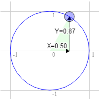
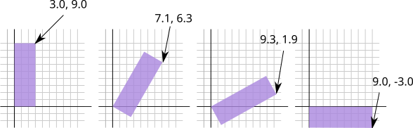
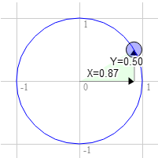

Cet article fait partie d’une série d’articles sur WebGL. Le premier a commencé par les bases et le précédent portait sur la translation de la géométrie.
Je vais admettre d’emblée que je n’ai aucune idée si ma façon d’expliquer cela aura du sens, mais qu’importe, autant essayer.
D’abord, je veux vous présenter ce qu’on appelle un “cercle unité”. Si vous vous souvenez de vos cours de maths au collège (ne vous endormez pas !), un cercle a un rayon. Le rayon d’un cercle est la distance du centre du cercle au bord. Un cercle unité est un cercle avec un rayon de 1.0.
Voici un cercle unité.
Remarquez que lorsque vous faites glisser la poignée bleue autour du cercle, les positions X et Y changent. Elles représentent la position de ce point sur le cercle. En haut, Y est 1 et X est 0. À droite, X est 1 et Y est 0.
Si vous vous souvenez des maths de base de l’école primaire, si vous multipliez quelque chose par 1, cela reste identique. Donc 123 * 1 = 123. Plutôt simple, non ? Eh bien, un cercle unité, un cercle avec un rayon de 1.0 est aussi une forme de 1. C’est un 1 rotatif. Donc vous pouvez multiplier quelque chose par ce cercle unité et d’une certaine manière c’est un peu comme multiplier par 1 sauf que la magie opère et les choses tournent.
Nous allons prendre cette valeur X et Y de n’importe quel point sur le cercle unité et nous allons multiplier notre géométrie par elles depuis notre exemple précédent.
Voici les mises à jour de notre shader.
#version 300 es
in vec2 a_position;
uniform vec2 u_resolution;
uniform vec2 u_translation;
+uniform vec2 u_rotation;
void main() {
+ // Effectue la rotation de la position
+ vec2 rotatedPosition = vec2(
+ a_position.x * u_rotation.y + a_position.y * u_rotation.x,
+ a_position.y * u_rotation.y - a_position.x * u_rotation.x);
// Ajoute la translation.
* vec2 position = rotatedPosition + u_translation;
...
Et nous mettons à jour le JavaScript pour pouvoir passer ces 2 valeurs.
...
+ var rotationLocation = gl.getUniformLocation(program, "u_rotation");
...
+ var rotation = [0, 1];
...
// Dessine la scène.
function drawScene() {
webglUtils.resizeCanvasToDisplaySize(gl.canvas);
// Indique à WebGL comment convertir de l'espace de découpage en pixels
gl.viewport(0, 0, gl.canvas.width, gl.canvas.height);
// Efface le canvas
gl.clearColor(0, 0, 0, 0);
gl.clear(gl.COLOR_BUFFER_BIT | gl.DEPTH_BUFFER_BIT);
// Indique d'utiliser notre programme (paire de shaders)
gl.useProgram(program);
// Lie l'ensemble attribut/tampon que nous voulons.
gl.bindVertexArray(vao);
// Passe la résolution du canvas pour pouvoir convertir
// des pixels vers l'espace de découpage dans le shader
gl.uniform2f(resolutionUniformLocation, gl.canvas.width, gl.canvas.height);
// Définit la couleur.
gl.uniform4fv(colorLocation, color);
// Définit la translation.
gl.uniform2fv(translationLocation, translation);
+ // Définit la rotation.
+ gl.uniform2fv(rotationLocation, rotation);
// Dessine le rectangle.
var primitiveType = gl.TRIANGLES;
var offset = 0;
var count = 18;
gl.drawArrays(primitiveType, offset, count);
}
Et voici le résultat. Faites glisser la poignée sur le cercle pour effectuer une rotation ou les curseurs pour translater.
Pourquoi cela fonctionne-t-il ? Eh bien, regardez les mathématiques.
rotatedX = a_position.x * u_rotation.y + a_position.y * u_rotation.x;
rotatedY = a_position.y * u_rotation.y - a_position.x * u_rotation.x;
Disons que vous avez un rectangle et que vous voulez le faire pivoter. Avant de commencer à le faire pivoter, le coin supérieur droit est en 3.0, 9.0. Choisissons un point sur le cercle unité à 30 degrés dans le sens horaire depuis midi.

La position sur le cercle est 0.50 et 0.87
3.0 * 0.87 + 9.0 * 0.50 = 7.1 9.0 * 0.87 - 3.0 * 0.50 = 6.3
C’est exactement là où nous en avons besoin

Pareil pour 60 degrés dans le sens horaire

La position sur le cercle est 0.87 et 0.50
3.0 * 0.50 + 9.0 * 0.87 = 9.3 9.0 * 0.50 - 3.0 * 0.87 = 1.9
Vous pouvez voir que lorsque nous faisons pivoter ce point dans le sens horaire vers la droite, la valeur X devient plus grande et Y devient plus petite. Si nous continuions au-delà de 90 degrés, X commencerait à devenir plus petite à nouveau et Y commencerait à devenir plus grande. Ce schéma nous donne la rotation.
Il y a un autre nom pour les points sur un cercle unité. Ils s’appellent le sinus et le cosinus. Donc pour n’importe quel angle donné, nous pouvons simplement rechercher le sinus et le cosinus comme ceci.
function printSineAndCosineForAnAngle(angleInDegrees) {
var angleInRadians = angleInDegrees * Math.PI / 180;
var s = Math.sin(angleInRadians);
var c = Math.cos(angleInRadians);
console.log("s = " + s + " c = " + c);
}
Si vous copiez et collez le code dans votre console JavaScript et
tapez printSineAndCosignForAnAngle(30), vous voyez qu’il affiche
s = 0.49 c = 0.87 (note : j’ai arrondi les nombres.)
Si vous assemblez tout cela, vous pouvez faire pivoter votre géométrie vers n’importe quel angle que vous désirez. Il suffit de définir la rotation au sinus et au cosinus de l’angle vers lequel vous voulez pivoter.
...
var angleInRadians = angleInDegrees * Math.PI / 180;
rotation[0] = Math.sin(angleInRadians);
rotation[1] = Math.cos(angleInRadians);
Voici une version qui n’a qu’un réglage d’angle. Faites glisser les curseurs pour translater ou pivoter.
J’espère que cela a eu un certain sens. Ensuite, un plus simple. La mise à l’échelle.